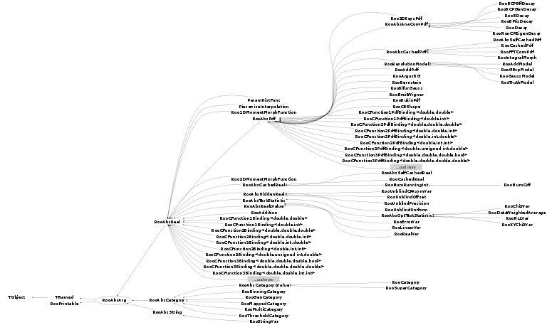

class RooAbsArg: public TNamed, public RooPrintable
RooAbsArg is the common abstract base class for objects that represent a value (of arbitrary type) and "shape" that in general depends on (is a client of) other RooAbsArg subclasses. The only state information about a value that is maintained in this base class consists of named attributes and flags that track when either the value or the shape of this object changes. The meaning of shape depends on the client implementation but could be, for example, the allowed range of a value. The base class is also responsible for managing client/server links and propagating value/shape changes through an expression tree. RooAbsArg implements public interfaces for inspecting client/server relationships and setting/clearing/testing named attributes.
Function Members (Methods)
This is an abstract class, constructors will not be documented.
Look at the header to check for available constructors.
public:
| virtual | ~RooAbsArg() |
| void | TObject::AbstractMethod(const char* method) const |
| Bool_t | addOwnedComponents(const RooArgSet& comps) |
| void | addParameters(RooArgSet& params, const RooArgSet* nset = 0, Bool_t stripDisconnected = kTRUE) const |
| void | addServer(RooAbsArg& server, Bool_t valueProp = kTRUE, Bool_t shapeProp = kFALSE) |
| void | addServerList(RooAbsCollection& serverList, Bool_t valueProp = kTRUE, Bool_t shapeProp = kFALSE) |
| const char* | aggregateCacheUniqueSuffix() const |
| virtual void | TObject::AppendPad(Option_t* option = "") |
| void | attachDataSet(const RooAbsData& set) |
| void | attachDataStore(const RooAbsDataStore& set) |
| const set<std::string>& | attributes() const |
| void | branchNodeServerList(RooAbsCollection* list, const RooAbsArg* arg = 0, Bool_t recurseNonDerived = kFALSE) const |
| virtual void | TObject::Browse(TBrowser* b) |
| virtual const char* | cacheUniqueSuffix() const |
| void | changeServer(RooAbsArg& server, Bool_t valueProp, Bool_t shapeProp) |
| Bool_t | checkDependents(const RooArgSet* nset) const |
| virtual Bool_t | checkObservables(const RooArgSet* nset) const |
| static TClass* | Class() |
| virtual const char* | TObject::ClassName() const |
| virtual void | TNamed::Clear(Option_t* option = "") |
| void | clearShapeDirty() const |
| void | clearValueAndShapeDirty() const |
| void | clearValueDirty() const |
| TIterator* | clientIterator() const |
| virtual TObject* | clone(const char* newname) const |
| virtual TObject* | Clone(const char* newname = 0) const |
| virtual RooAbsArg* | cloneTree(const char* newname = 0) const |
| virtual Int_t | Compare(const TObject* other) const |
| virtual void | constOptimizeTestStatistic(RooAbsArg::ConstOpCode opcode, Bool_t doAlsoTrackingOpt = kTRUE) |
| virtual void | TNamed::Copy(TObject& named) const |
| static UInt_t | crc32(const char* data) |
| virtual RooAbsArg* | createFundamental(const char* newname = 0) const |
| virtual Int_t | defaultPrintContents(Option_t* opt) const |
| static ostream& | RooPrintable::defaultPrintStream(ostream* os = 0) |
| virtual RooPrintable::StyleOption | RooPrintable::defaultPrintStyle(Option_t* opt) const |
| virtual void | TObject::Delete(Option_t* option = "")MENU |
| Bool_t | dependentOverlaps(const RooAbsData* dset, const RooAbsArg& testArg) const |
| Bool_t | dependentOverlaps(const RooArgSet* depList, const RooAbsArg& testArg) const |
| Bool_t | dependsOn(const RooAbsCollection& serverList, const RooAbsArg* ignoreArg = 0, Bool_t valueOnly = kFALSE) const |
| Bool_t | dependsOn(const RooAbsArg& server, const RooAbsArg* ignoreArg = 0, Bool_t valueOnly = kFALSE) const |
| Bool_t | dependsOnValue(const RooAbsCollection& serverList, const RooAbsArg* ignoreArg = 0) const |
| Bool_t | dependsOnValue(const RooAbsArg& server, const RooAbsArg* ignoreArg = 0) const |
| virtual Int_t | TObject::DistancetoPrimitive(Int_t px, Int_t py) |
| virtual void | TObject::Draw(Option_t* option = "") |
| virtual void | TObject::DrawClass() constMENU |
| virtual TObject* | TObject::DrawClone(Option_t* option = "") constMENU |
| virtual void | TObject::Dump() constMENU |
| virtual void | TObject::Error(const char* method, const char* msgfmt) const |
| virtual void | TObject::Execute(const char* method, const char* params, Int_t* error = 0) |
| virtual void | TObject::Execute(TMethod* method, TObjArray* params, Int_t* error = 0) |
| virtual void | TObject::ExecuteEvent(Int_t event, Int_t px, Int_t py) |
| RooExpensiveObjectCache& | expensiveObjectCache() const |
| virtual void | TObject::Fatal(const char* method, const char* msgfmt) const |
| virtual void | TNamed::FillBuffer(char*& buffer) |
| Bool_t | findConstantNodes(const RooArgSet& observables, RooArgSet& cacheList) |
| Bool_t | findConstantNodes(const RooArgSet& observables, RooArgSet& cacheList, RooLinkedList& processedNodes) |
| RooAbsArg* | findNewServer(const RooAbsCollection& newSet, Bool_t nameChange) const |
| virtual TObject* | TObject::FindObject(const char* name) const |
| virtual TObject* | TObject::FindObject(const TObject* obj) const |
| RooAbsArg* | findServer(const char* name) const |
| RooAbsArg* | findServer(const RooAbsArg& arg) const |
| RooAbsArg* | findServer(Int_t index) const |
| Bool_t | getAttribute(const Text_t* name) const |
| RooAbsCache* | getCache(Int_t index) const |
| RooLinkedList | getCloningAncestors() const |
| RooArgSet* | getComponents() const |
| RooArgSet* | getDependents(const RooArgSet& set) const |
| RooArgSet* | getDependents(const RooAbsData* set) const |
| RooArgSet* | getDependents(const RooArgSet* depList) const |
| virtual Option_t* | TObject::GetDrawOption() const |
| static Long_t | TObject::GetDtorOnly() |
| virtual const char* | TObject::GetIconName() const |
| virtual const char* | TNamed::GetName() const |
| virtual char* | TObject::GetObjectInfo(Int_t px, Int_t py) const |
| static Bool_t | TObject::GetObjectStat() |
| RooArgSet* | getObservables(const RooAbsData* data) const |
| RooArgSet* | getObservables(const RooAbsData& data) const |
| RooArgSet* | getObservables(const RooArgSet& set, Bool_t valueOnly = kTRUE) const |
| RooArgSet* | getObservables(const RooArgSet* depList, Bool_t valueOnly = kTRUE) const |
| virtual Option_t* | TObject::GetOption() const |
| RooArgSet* | getParameters(const RooAbsData* data, Bool_t stripDisconnected = kTRUE) const |
| RooArgSet* | getParameters(const RooAbsData& data, Bool_t stripDisconnected = kTRUE) const |
| RooArgSet* | getParameters(const RooArgSet& set, Bool_t stripDisconnected = kTRUE) const |
| virtual RooArgSet* | getParameters(const RooArgSet* depList, Bool_t stripDisconnected = kTRUE) const |
| const Text_t* | getStringAttribute(const Text_t* key) const |
| virtual const char* | TNamed::GetTitle() const |
| Bool_t | getTransientAttribute(const Text_t* name) const |
| virtual UInt_t | TObject::GetUniqueID() const |
| RooArgSet* | getVariables(Bool_t stripDisconnected = kTRUE) const |
| void | graphVizTree(const char* fileName, const char* delimiter = "\n", bool useTitle = false, bool useLatex = false) |
| void | graphVizTree(ostream& os, const char* delimiter = "\n", bool useTitle = false, bool useLatex = false) |
| virtual Bool_t | TObject::HandleTimer(TTimer* timer) |
| Bool_t | hasClients() const |
| virtual ULong_t | TNamed::Hash() const |
| virtual Bool_t | hasRange(const char*) const |
| virtual Bool_t | importWorkspaceHook(RooWorkspace&) |
| virtual void | TObject::Info(const char* method, const char* msgfmt) const |
| virtual Bool_t | TObject::InheritsFrom(const char* classname) const |
| virtual Bool_t | TObject::InheritsFrom(const TClass* cl) const |
| virtual Bool_t | inRange(const char*) const |
| virtual void | TObject::Inspect() constMENU |
| void | TObject::InvertBit(UInt_t f) |
| virtual TClass* | IsA() const |
| Bool_t | isCloneOf(const RooAbsArg& other) const |
| Bool_t | isConstant() const |
| virtual Bool_t | isDerived() const |
| virtual Bool_t | TObject::IsEqual(const TObject* obj) const |
| virtual Bool_t | TObject::IsFolder() const |
| virtual Bool_t | isFundamental() const |
| virtual Bool_t | isLValue() const |
| Bool_t | TObject::IsOnHeap() const |
| Bool_t | isShapeDirty() const |
| Bool_t | isShapeServer(const RooAbsArg& arg) const |
| Bool_t | isShapeServer(const char* name) const |
| virtual Bool_t | IsSortable() const |
| Bool_t | isValueDirty() const |
| Bool_t | isValueDirtyAndClear() const |
| Bool_t | isValueOrShapeDirtyAndClear() const |
| Bool_t | isValueServer(const RooAbsArg& arg) const |
| Bool_t | isValueServer(const char* name) const |
| Bool_t | TObject::IsZombie() const |
| void | leafNodeServerList(RooAbsCollection* list, const RooAbsArg* arg = 0, Bool_t recurseNonDerived = kFALSE) const |
| virtual void | TNamed::ls(Option_t* option = "") const |
| void | TObject::MayNotUse(const char* method) const |
| static void | RooPrintable::nameFieldLength(Int_t newLen) |
| const TNamed* | namePtr() const |
| virtual Bool_t | TObject::Notify() |
| Int_t | numCaches() const |
| Bool_t | observableOverlaps(const RooAbsData* dset, const RooAbsArg& testArg) const |
| Bool_t | observableOverlaps(const RooArgSet* depList, const RooAbsArg& testArg) const |
| void | TObject::Obsolete(const char* method, const char* asOfVers, const char* removedFromVers) const |
| static void | TObject::operator delete(void* ptr) |
| static void | TObject::operator delete(void* ptr, void* vp) |
| static void | TObject::operator delete[](void* ptr) |
| static void | TObject::operator delete[](void* ptr, void* vp) |
| void* | TObject::operator new(size_t sz) |
| void* | TObject::operator new(size_t sz, void* vp) |
| void* | TObject::operator new[](size_t sz) |
| void* | TObject::operator new[](size_t sz, void* vp) |
| TNamed& | TNamed::operator=(const TNamed& rhs) |
| virtual Bool_t | operator==(const RooAbsArg& other) |
| RooAbsArg::OperMode | operMode() const |
| virtual void | optimizeCacheMode(const RooArgSet& observables) |
| virtual void | optimizeCacheMode(const RooArgSet& observables, RooArgSet& optNodes, RooLinkedList& processedNodes) |
| Bool_t | overlaps(const RooAbsArg& testArg, Bool_t valueOnly = kFALSE) const |
| const RooArgSet* | ownedComponents() const |
| virtual void | TObject::Paint(Option_t* option = "") |
| virtual void | TObject::Pop() |
| virtual void | Print(Option_t* options = 0) const |
| virtual void | printAddress(ostream& os) const |
| virtual void | printArgs(ostream& os) const |
| virtual void | printClassName(ostream& os) const |
| void | printCompactTree(const char* indent = "", const char* fileName = 0, const char* namePat = 0, RooAbsArg* client = 0) |
| void | printCompactTree(ostream& os, const char* indent = "", const char* namePat = 0, RooAbsArg* client = 0) |
| virtual void | printCompactTreeHook(ostream& os, const char* ind = "") |
| void | printComponentTree(const char* indent = "", const char* namePat = 0, Int_t nLevel = 999) |
| void | printDirty(Bool_t depth = kTRUE) const |
| virtual void | RooPrintable::printExtras(ostream& os) const |
| virtual void | printMetaArgs(ostream&) const |
| virtual void | printMultiline(ostream& os, Int_t contents, Bool_t verbose = kFALSE, TString indent = "") const |
| virtual void | printName(ostream& os) const |
| virtual void | RooPrintable::printStream(ostream& os, Int_t contents, RooPrintable::StyleOption style, TString indent = "") const |
| virtual void | printTitle(ostream& os) const |
| virtual void | printTree(ostream& os, TString indent = "") const |
| virtual void | RooPrintable::printValue(ostream& os) const |
| virtual Int_t | TObject::Read(const char* name) |
| virtual Bool_t | readFromStream(istream& is, Bool_t compact, Bool_t verbose = kFALSE) |
| Bool_t | recursiveCheckDependents(const RooArgSet* nset) const |
| Bool_t | recursiveCheckObservables(const RooArgSet* nset) const |
| Bool_t | recursiveRedirectServers(const RooAbsCollection& newServerList, Bool_t mustReplaceAll = kFALSE, Bool_t nameChange = kFALSE, Bool_t recurseInNewSet = kTRUE) |
| virtual void | TObject::RecursiveRemove(TObject* obj) |
| Bool_t | redirectServers(const RooAbsCollection& newServerList, Bool_t mustReplaceAll = kFALSE, Bool_t nameChange = kFALSE, Bool_t isRecursionStep = kFALSE) |
| virtual Bool_t | redirectServersHook(const RooAbsCollection&, Bool_t, Bool_t, Bool_t) |
| void | registerCache(RooAbsCache& cache) |
| void | removeServer(RooAbsArg& server, Bool_t force = kFALSE) |
| void | replaceServer(RooAbsArg& oldServer, RooAbsArg& newServer, Bool_t valueProp, Bool_t shapeProp) |
| void | TObject::ResetBit(UInt_t f) |
| virtual void | TObject::SaveAs(const char* filename = "", Option_t* option = "") constMENU |
| virtual void | TObject::SavePrimitive(ostream& out, Option_t* option = "") |
| TIterator* | serverIterator() const |
| RooFIter | serverMIterator() const |
| virtual void | serverNameChangeHook(const RooAbsArg*, const RooAbsArg*) |
| void | setAttribute(const Text_t* name, Bool_t value = kTRUE) |
| void | TObject::SetBit(UInt_t f) |
| void | TObject::SetBit(UInt_t f, Bool_t set) |
| static void | setDirtyInhibit(Bool_t flag) |
| virtual void | TObject::SetDrawOption(Option_t* option = "")MENU |
| static void | TObject::SetDtorOnly(void* obj) |
| void | setExpensiveObjectCache(RooExpensiveObjectCache& cache) |
| virtual void | SetName(const char* name) |
| virtual void | SetNameTitle(const char* name, const char* title) |
| static void | TObject::SetObjectStat(Bool_t stat) |
| void | setOperMode(RooAbsArg::OperMode mode, Bool_t recurseADirty = kTRUE) |
| void | setProhibitServerRedirect(Bool_t flag) |
| void | setShapeDirty() const |
| void | setStringAttribute(const Text_t* key, const Text_t* value) |
| virtual void | TNamed::SetTitle(const char* title = "")MENU |
| void | setTransientAttribute(const Text_t* name, Bool_t value = kTRUE) |
| virtual void | TObject::SetUniqueID(UInt_t uid) |
| void | setValueDirty() const |
| TIterator* | shapeClientIterator() const |
| RooFIter | shapeClientMIterator() const |
| virtual void | ShowMembers(TMemberInspector& insp) |
| virtual Int_t | TNamed::Sizeof() const |
| virtual void | Streamer(TBuffer& b) |
| void | StreamerNVirtual(TBuffer& b) |
| const map<std::string,std::string>& | stringAttributes() const |
| virtual void | TObject::SysError(const char* method, const char* msgfmt) const |
| Bool_t | TObject::TestBit(UInt_t f) const |
| Int_t | TObject::TestBits(UInt_t f) const |
| const set<std::string>& | transientAttributes() const |
| void | treeNodeServerList(RooAbsCollection* list, const RooAbsArg* arg = 0, Bool_t doBranch = kTRUE, Bool_t doLeaf = kTRUE, Bool_t valueOnly = kFALSE, Bool_t recurseNonDerived = kFALSE) const |
| void | unRegisterCache(RooAbsCache& cache) |
| virtual void | TObject::UseCurrentStyle() |
| TIterator* | valueClientIterator() const |
| RooFIter | valueClientMIterator() const |
| static void | verboseDirty(Bool_t flag) |
| virtual void | TObject::Warning(const char* method, const char* msgfmt) const |
| void | wireAllCaches() |
| virtual Int_t | TObject::Write(const char* name = 0, Int_t option = 0, Int_t bufsize = 0) |
| virtual Int_t | TObject::Write(const char* name = 0, Int_t option = 0, Int_t bufsize = 0) const |
| virtual void | writeToStream(ostream& os, Bool_t compact) const |
protected:
Data Members
public:
| enum ConstOpCode { | Activate | |
| DeActivate | ||
| ConfigChange | ||
| ValueChange | ||
| }; | ||
| enum OperMode { | Auto | |
| AClean | ||
| ADirty | ||
| }; | ||
| enum TObject::EStatusBits { | kCanDelete | |
| kMustCleanup | ||
| kObjInCanvas | ||
| kIsReferenced | ||
| kHasUUID | ||
| kCannotPick | ||
| kNoContextMenu | ||
| kInvalidObject | ||
| }; | ||
| enum TObject::[unnamed] { | kIsOnHeap | |
| kNotDeleted | ||
| kZombie | ||
| kBitMask | ||
| kSingleKey | ||
| kOverwrite | ||
| kWriteDelete | ||
| }; | ||
| enum RooPrintable::ContentsOption { | kName | |
| kClassName | ||
| kValue | ||
| kArgs | ||
| kExtras | ||
| kAddress | ||
| kTitle | ||
| kCollectionHeader | ||
| }; | ||
| enum RooPrintable::StyleOption { | kInline | |
| kSingleLine | ||
| kStandard | ||
| kVerbose | ||
| kTreeStructure | ||
| }; |
protected:
| set<std::string> | _boolAttrib | Boolean attributes |
| set<std::string> | _boolAttribTransient | ! Transient boolean attributes (not copied in ctor) |
| deque<RooAbsCache*> | _cacheList | list of caches |
| RooRefCountList | _clientList | list of client objects |
| RooRefCountList | _clientListShape | subset of clients that requested shape dirty flag propagation |
| RooRefCountList | _clientListValue | subset of clients that requested value dirty flag propagation |
| TIterator* | _clientShapeIter | ! Iterator over _clientListShape |
| TIterator* | _clientValueIter | ! Iterator over _clientListValue |
| Bool_t | _deleteWatch | ! Delete watch flag |
| RooExpensiveObjectCache* | _eocache | Pointer to global cache manager for any expensive components created by this object |
| Bool_t | _fast | Allow fast access mode in getVal() and proxies |
| static Bool_t | _inhibitDirty | Static flag controlling global inhibit of dirty state propagation |
| static Int_t | RooPrintable::_nameLength | |
| TNamed* | _namePtr | ! Do not persist. Pointer to global instance of string that matches object named |
| RooAbsArg::OperMode | _operMode | Dirty state propagation mode |
| RooArgSet* | _ownedComponents | ! Set of owned component |
| Bool_t | _prohibitServerRedirect | ! Prohibit server redirects -- Debugging tool |
| TRefArray | _proxyList | list of proxies |
| RooRefCountList | _serverList | list of server objects |
| Bool_t | _shapeDirty | Flag set if value needs recalculating because input shapes modified |
| map<std::string,std::string> | _stringAttrib | String attributes |
| Bool_t | _valueDirty | Flag set if value needs recalculating because input values modified |
| static Bool_t | _verboseDirty | Static flag controlling verbose messaging for dirty state changes |
| TString | TNamed::fName | object identifier |
| TString | TNamed::fTitle | object title |
Class Charts
{kind=link}
{kind=link}
{kind=link}
{kind=link}

Function documentation
void setDirtyInhibit(Bool_t flag)
Control global dirty inhibit mode. When set to true no value or shape dirty flags are propagated and cache is always considered to be dirty.
Bool_t isCloneOf(const RooAbsArg& other) const
Check if this object was created as a clone of 'other'
void setAttribute(const Text_t* name, Bool_t value = kTRUE)
Set (default) or clear a named boolean attribute of this object.
Bool_t getAttribute(const Text_t* name) const
Check if a named attribute is set. By default, all attributes are unset.
void setStringAttribute(const Text_t* key, const Text_t* value)
Associate string 'value' to this object under key 'key'
const Text_t* getStringAttribute(const Text_t* key) const
Get string attribute mapped under key 'key'. Returns null pointer if no attribute exists under that key
void setTransientAttribute(const Text_t* name, Bool_t value = kTRUE)
Set (default) or clear a named boolean attribute of this object.
Bool_t getTransientAttribute(const Text_t* name) const
Check if a named attribute is set. By default, all attributes are unset.
void addServer(RooAbsArg& server, Bool_t valueProp = kTRUE, Bool_t shapeProp = kFALSE)
Register another RooAbsArg as a server to us, ie, declare that we depend on it. In addition to the basic client-server relationship, we can declare dependence on the server's value and/or shape.
void addServerList(RooAbsCollection& serverList, Bool_t valueProp = kTRUE, Bool_t shapeProp = kFALSE)
void removeServer(RooAbsArg& server, Bool_t force = kFALSE)
Unregister another RooAbsArg as a server to us, ie, declare that we no longer depend on its value and shape.
void replaceServer(RooAbsArg& oldServer, RooAbsArg& newServer, Bool_t valueProp, Bool_t shapeProp)
Replace 'oldServer' with 'newServer'
void changeServer(RooAbsArg& server, Bool_t valueProp, Bool_t shapeProp)
Change dirty flag propagation mask for specified server
void leafNodeServerList(RooAbsCollection* list, const RooAbsArg* arg = 0, Bool_t recurseNonDerived = kFALSE) const
Fill supplied list with all leaf nodes of the arg tree, starting with ourself as top node. A leaf node is node that has no servers declared.
void branchNodeServerList(RooAbsCollection* list, const RooAbsArg* arg = 0, Bool_t recurseNonDerived = kFALSE) const
Fill supplied list with all branch nodes of the arg tree starting with ourself as top node. A branch node is node that has one or more servers declared.
void treeNodeServerList(RooAbsCollection* list, const RooAbsArg* arg = 0, Bool_t doBranch = kTRUE, Bool_t doLeaf = kTRUE, Bool_t valueOnly = kFALSE, Bool_t recurseNonDerived = kFALSE) const
Fill supplied list with nodes of the arg tree, following all server links, starting with ourself as top node.
RooArgSet* getParameters(const RooAbsData* data, Bool_t stripDisconnected = kTRUE) const
Create a list of leaf nodes in the arg tree starting with ourself as top node that don't match any of the names of the variable list of the supplied data set (the dependents). The caller of this function is responsible for deleting the returned argset. The complement of this function is getObservables()
void addParameters(RooArgSet& params, const RooArgSet* nset = 0, Bool_t stripDisconnected = kTRUE) const
INTERNAL helper function for getParameters()
RooArgSet* getParameters(const RooArgSet* depList, Bool_t stripDisconnected = kTRUE) const
Create a list of leaf nodes in the arg tree starting with ourself as top node that don't match any of the names the args in the supplied argset. The caller of this function is responsible for deleting the returned argset. The complement of this function is getObservables()
RooArgSet* getObservables(const RooAbsData* data) const
Create a list of leaf nodes in the arg tree starting with ourself as top node that match any of the names of the variable list of the supplied data set (the dependents). The caller of this function is responsible for deleting the returned argset. The complement of this function is getObservables()
RooArgSet* getObservables(const RooArgSet* depList, Bool_t valueOnly = kTRUE) const
Create a list of leaf nodes in the arg tree starting with ourself as top node that match any of the names the args in the supplied argset. The caller of this function is responsible for deleting the returned argset. The complement of this function is getObservables()
RooArgSet* getComponents() const
Return a RooArgSet with all component (branch nodes) of the expression tree headed by this object
Bool_t checkObservables(const RooArgSet* nset) const
Overloadable function in which derived classes can implement consistency checks of the variables. If this function returns true, indicating an error, the fitter or generator will abort.
Bool_t recursiveCheckObservables(const RooArgSet* nset) const
Recursively call checkObservables on all nodes in the expression tree
Bool_t dependsOn(const RooAbsCollection& serverList, const RooAbsArg* ignoreArg = 0, Bool_t valueOnly = kFALSE) const
Bool_t dependsOn(const RooAbsArg& server, const RooAbsArg* ignoreArg = 0, Bool_t valueOnly = kFALSE) const
Test whether we depend on (ie, are served by) the specified object. Note that RooAbsArg objects are considered equivalent if they have the same name.
Bool_t overlaps(const RooAbsArg& testArg, Bool_t valueOnly = kFALSE) const
Test if any of the nodes of tree are shared with that of the given tree
Bool_t observableOverlaps(const RooAbsData* dset, const RooAbsArg& testArg) const
Test if any of the dependents of the arg tree (as determined by getObservables) overlaps with those of the testArg.
Bool_t observableOverlaps(const RooArgSet* depList, const RooAbsArg& testArg) const
Test if any of the dependents of the arg tree (as determined by getObservables) overlaps with those of the testArg.
void setValueDirty(const RooAbsArg* source) const
Mark this object as having changed its value, and propagate this status change to all of our clients. If the object is not in automatic dirty state propagation mode, this call has no effect
void setShapeDirty(const RooAbsArg* source) const
Mark this object as having changed its shape, and propagate this status change to all of our clients.
Bool_t redirectServers(const RooAbsCollection& newServerList, Bool_t mustReplaceAll = kFALSE, Bool_t nameChange = kFALSE, Bool_t isRecursionStep = kFALSE)
Substitute our servers with those listed in newSet. If nameChange is false, servers and and substitutes are matched by name. If nameChange is true, servers are matched to args in newSet that have the 'ORIGNAME:<servername>' attribute set. If mustReplaceAll is set, a warning is printed and error status is returned if not all servers could be sucessfully substituted.
RooAbsArg * findNewServer(const RooAbsCollection& newSet, Bool_t nameChange) const
Find the new server in the specified set that matches the old server. Allow a name change if nameChange is kTRUE, in which case the new server is selected by searching for a new server with an attribute of "ORIGNAME:<oldName>". Return zero if there is not a unique match.
Bool_t recursiveRedirectServers(const RooAbsCollection& newServerList, Bool_t mustReplaceAll = kFALSE, Bool_t nameChange = kFALSE, Bool_t recurseInNewSet = kTRUE)
Recursively redirect all servers with new server in collection 'newSet'. Substitute our servers with those listed in newSet. If nameChange is false, servers and and substitutes are matched by name. If nameChange is true, servers are matched to args in newSet that have the 'ORIGNAME:<servername>' attribute set. If mustReplaceAll is set, a warning is printed and error status is returned if not all servers could be sucessfully substituted. If recurseInNewSet is true, the recursion algorithm also recursion into expression trees under the arguments in the new servers (i.e. those in newset)
void registerProxy(RooArgProxy& proxy)
Register an RooArgProxy in the proxy list. This function is called by owned proxies upon creation. After registration, this arg wil forward pointer changes from serverRedirects and updates in cached normalization sets to the proxies immediately after they occur. The proxied argument is also added as value and/or shape server
void unRegisterProxy(RooArgProxy& proxy)
Remove proxy from proxy list. This functions is called by owned proxies upon their destruction.
void registerProxy(RooSetProxy& proxy)
Register an RooSetProxy in the proxy list. This function is called by owned proxies upon creation. After registration, this arg wil forward pointer changes from serverRedirects and updates in cached normalization sets to the proxies immediately after they occur.
void unRegisterProxy(RooSetProxy& proxy)
Remove proxy from proxy list. This functions is called by owned proxies upon their destruction.
void registerProxy(RooListProxy& proxy)
Register an RooListProxy in the proxy list. This function is called by owned proxies upon creation. After registration, this arg wil forward pointer changes from serverRedirects and updates in cached normalization sets to the proxies immediately after they occur.
void unRegisterProxy(RooListProxy& proxy)
Remove proxy from proxy list. This functions is called by owned proxies upon their destruction.
void setProxyNormSet(const RooArgSet* nset)
Forward a change in the cached normalization argset to all the registered proxies.
void attachToTree(TTree& t, Int_t bufSize = 32000)
Overloadable function for derived classes to implement attachment as branch to a TTree
void printMultiline(ostream& os, Int_t contents, Bool_t verbose = kFALSE, TString indent = "") const
Implement multi-line detailed printing
void attachDataSet(const RooAbsData& set)
Replace server nodes with names matching the dataset variable names with those data set variables, making this PDF directly dependent on the dataset
void attachDataStore(const RooAbsDataStore& set)
Replace server nodes with names matching the dataset variable names with those data set variables, making this PDF directly dependent on the dataset
Int_t Compare(const TObject* other) const
Utility function used by TCollection::Sort to compare contained TObjects We implement comparison by name, resulting in alphabetical sorting by object name.
void printDirty(Bool_t depth = kTRUE) const
void optimizeCacheMode(const RooArgSet& observables)
Activate cache mode optimization with given definition of observables. The cache operation mode of all objects in the expression tree will modified such that all nodes that depend directly or indirectly on any of the listed observables will be set to ADirty, as they are expected to change every time. This save change tracking overhead for nodes that are a priori known to change every time
void optimizeCacheMode(const RooArgSet& observables, RooArgSet& optNodes, RooLinkedList& processedNodes)
Activate cache mode optimization with given definition of observables. The cache operation mode of all objects in the expression tree will modified such that all nodes that depend directly or indirectly on any of the listed observables will be set to ADirty, as they are expected to change every time. This save change tracking overhead for nodes that are a priori known to change every time
Bool_t findConstantNodes(const RooArgSet& observables, RooArgSet& cacheList)
Find branch nodes with all-constant parameters, and add them to the list of nodes that can be cached with a dataset in a test statistic calculation
Bool_t findConstantNodes(const RooArgSet& observables, RooArgSet& cacheList, RooLinkedList& processedNodes)
Find branch nodes with all-constant parameters, and add them to the list of nodes that can be cached with a dataset in a test statistic calculation
void constOptimizeTestStatistic(RooAbsArg::ConstOpCode opcode, Bool_t doAlsoTrackingOpt = kTRUE)
Interface function signaling a request to perform constant term optimization. This default implementation takes no action other than to forward the calls to all servers
void setOperMode(RooAbsArg::OperMode mode, Bool_t recurseADirty = kTRUE)
Change cache operation mode to given mode. If recurseAdirty is true, then a mode change to AlwaysDirty will automatically be propagated recursively to all client nodes
void printCompactTree(const char* indent = "", const char* fileName = 0, const char* namePat = 0, RooAbsArg* client = 0)
Print tree structure of expression tree on stdout, or to file if filename is specified. If namePat is not "*", only nodes with names matching the pattern will be printed. The client argument is used in recursive calls to properly display the value or shape nature of the client-server links. It should be zero in calls initiated by users.
void printCompactTree(ostream& os, const char* indent = "", const char* namePat = 0, RooAbsArg* client = 0)
Print tree structure of expression tree on given ostream. If namePat is not "*", only nodes with names matching the pattern will be printed. The client argument is used in recursive calls to properly display the value or shape nature of the client-server links. It should be zero in calls initiated by users.
void printComponentTree(const char* indent = "", const char* namePat = 0, Int_t nLevel = 999)
TString cleanBranchName() const
Construct a mangled name from the actual name that is free of any math symbols that might be interpreted by TTree
void printCompactTreeHook(ostream& os, const char* ind = "")
Hook function interface for object to insert additional information when printed in the context of a tree structure. This default implementation prints nothing
void registerCache(RooAbsCache& cache)
Register RooAbsCache with this object. This function is called by RooAbsCache constructors for objects that are a datamember of this RooAbsArg. By registering itself the RooAbsArg is aware of all its cache data members and will forward server change and cache mode change calls to the cache objects, which in turn can forward them their contents
void unRegisterCache(RooAbsCache& cache)
Unregister a RooAbsCache. Called from the RooAbsCache destructor
RooArgSet* getVariables(Bool_t stripDisconnected = kTRUE) const
Return RooArgSet with all variables (tree leaf nodes of expresssion tree)
RooLinkedList getCloningAncestors() const
Return ancestors in cloning chain of this RooAbsArg. NOTE: Returned pointers are not guaranteed to be 'live', so do not dereference without proper caution
void graphVizTree(const char* fileName, const char* delimiter = "\n", bool useTitle = false, bool useLatex = false)
Create a GraphViz .dot file visualizing the expression tree headed by this RooAbsArg object. Use the GraphViz tool suite to make e.g. a gif or ps file from the .dot file Based on concept developed by Kyle Cranmer
void graphVizTree(ostream& os, const char* delimiter = "\n", bool useTitle = false, bool useLatex = false)
void graphVizAddConnections(set<std::pair<RooAbsArg*,RooAbsArg*> >& )
Utility function that inserts all point-to-point client-server connections between any two RooAbsArgs in the expression tree headed by this object in the linkSet argument.
void attachToStore(RooAbsDataStore& store)
const char* aggregateCacheUniqueSuffix() const
void wireAllCaches()
void SetName(const char* name)
void SetNameTitle(const char* name, const char* title)
Bool_t dependsOnValue(const RooAbsCollection& serverList, const RooAbsArg* ignoreArg = 0) const
Does this arg depend on the value of any of of the values in serverList?
Bool_t dependsOnValue(const RooAbsArg& server, const RooAbsArg* ignoreArg = 0) const
Does this arg depend on the value of server?
RooAbsArg* findServer(const char* name) const
Return server of this arg with given name. Returns null if not found
RooAbsArg* findServer(const RooAbsArg& arg) const
Return server of this arg with name of given input arg. Returns null if not found
Bool_t isFundamental() const
RooAbsArg * createFundamental(const char* newname = 0) const
Create a fundamental-type object that stores our type of value. The created object will have a valid value, but not necessarily the same as our value. The caller is responsible for deleting the returned object.
Bool_t isLValue() const
Is this argument an l-value, ie, can it appear on the left-hand side of an assignment expression? LValues are also special since they can potentially be analytically integrated and generated.
RooArgSet* getParameters(const RooAbsData* data, Bool_t stripDisconnected = kTRUE) const
RooArgSet* getParameters(const RooAbsData& data, Bool_t stripDisconnected = kTRUE) const
Return the parameters of this p.d.f when used in conjuction with dataset 'data'
RooArgSet* getObservables(const RooArgSet& set, Bool_t valueOnly = kTRUE) const
Return the observables of _this_ pdf given a set of observables
return getObservables(&set,valueOnly)
RooArgSet* getDependents(const RooArgSet& set) const
--- Obsolete functions for backward compatibility
{ return getObservables(set) ; }Bool_t dependentOverlaps(const RooAbsData* dset, const RooAbsArg& testArg) const
{ return observableOverlaps(dset,testArg) ; }Bool_t dependentOverlaps(const RooArgSet* depList, const RooAbsArg& testArg) const
{ return observableOverlaps(depList, testArg) ; }Bool_t recursiveCheckDependents(const RooArgSet* nset) const
--- End obsolete functions for backward compatibility
{ return recursiveCheckObservables(nset) ; }Bool_t readFromStream(istream& is, Bool_t compact, Bool_t verbose = kFALSE)
I/O streaming interface (machine readable)
void writeToStream(ostream& os, Bool_t compact) const
const std::map<std::string,std::string>& stringAttributes() const
Returns map<string,string> with all string attributes defined
Bool_t operator==(const RooAbsArg& other)
Bool_t hasRange(const char* ) const
Has this argument a defined range (dummy interface always returns flase)
Bool_t isValueDirtyAndClear() const
Returns true of value has been invalidated by server value change
Bool_t isValueOrShapeDirtyAndClear() const
Returns true of value has been invalidated by server value change
void setValueDirty() const
Dirty state modifiers
{ if (_operMode==Auto && !inhibitDirty()) setValueDirty(0) ; }void clearValueAndShapeDirty() const
void clearValueDirty() const
void clearShapeDirty() const
void attachToVStore(RooVectorDataStore& vstore)
void setTreeBranchStatus(TTree& t, Bool_t active)
void fillTreeBranch(TTree& t)